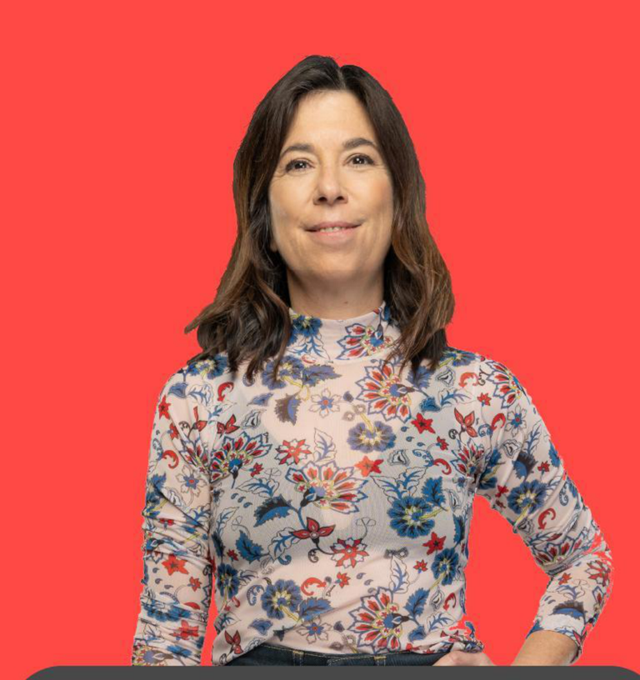
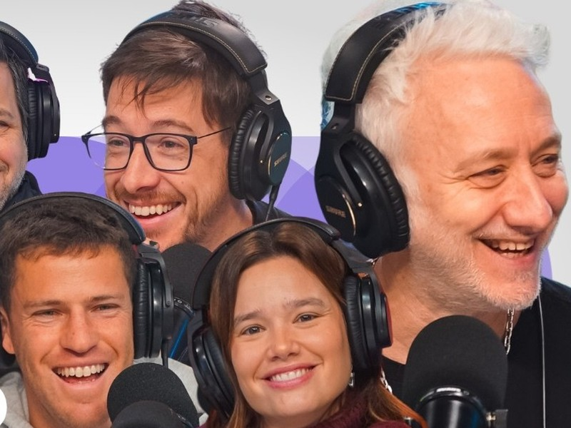
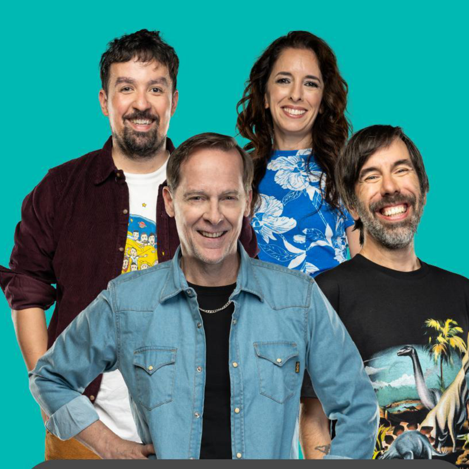
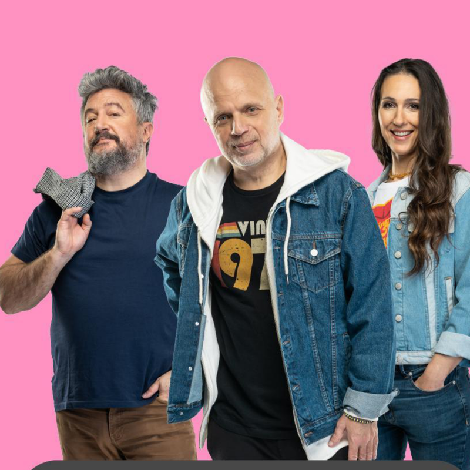
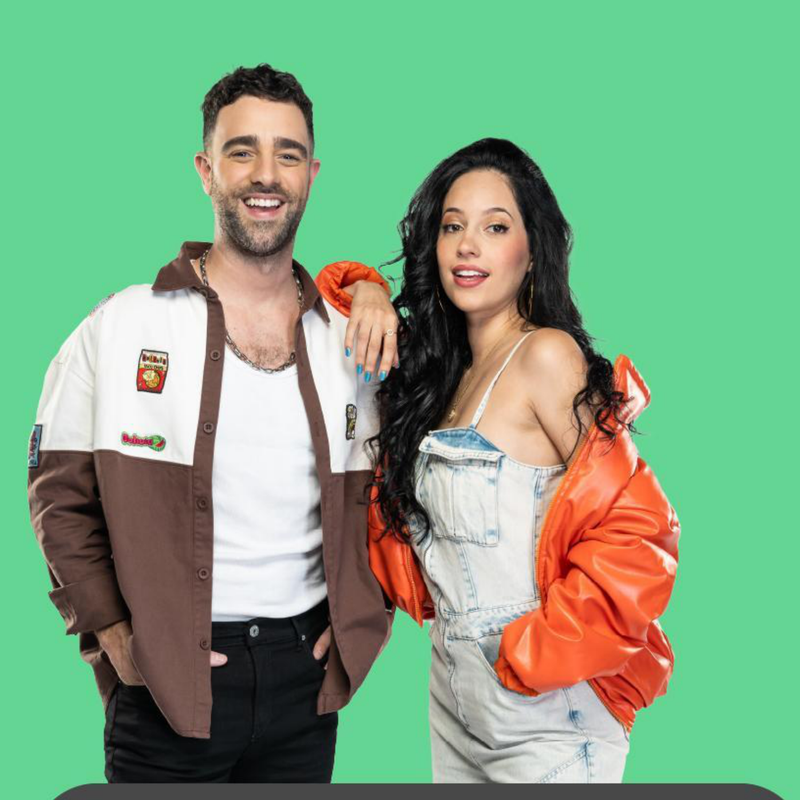
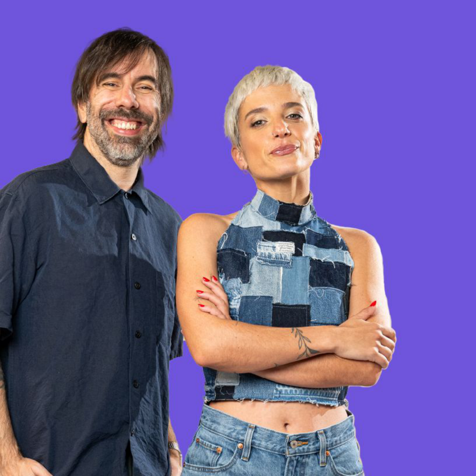
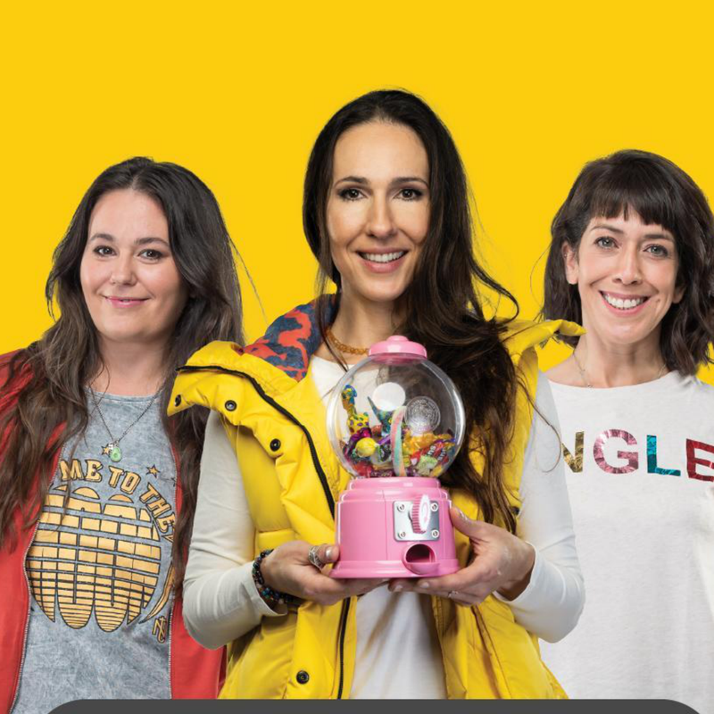
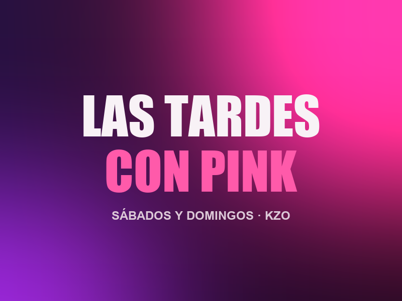

Las voces de Urbana Play, ahora en pantalla. Entretenimiento, actualidad y talk shows todo el día.
Andy Kusnetzoff, María O'Donnell, Matías Martín, Sebastián Wainraich, Diego Poggi y más: los programas más escuchados de la radio, en vivo de lunes a viernes, con fin de semana propio.
Grilla semana del sábado 26 de Septiembre al viernes 2 de Octubre 2026. Del primer mate a la noche, con los conductores más escuchados.

El arranque del día con María O'Donnell. Actualidad, entrevistas y análisis para empezar la mañana informado.

El programa más escuchado de la radio argentina, ahora en pantalla. Andy Kusnetzoff junto a su equipo en la versión televisiva desde Urbana Play.

Actualidad, entrevistas y lo mejor del entretenimiento. El magazine que cubre todos los temas con un equipo de primera.

Humor, actualidad y conversaciones con los mejores invitados. Wainraich y su equipo en el programa más divertido de la tarde.

El cierre del día con la mejor onda. Diego Poggi y Anaís Castro con entretenimiento, humor y los temas del momento.

El programa musical de KZO. Clemente Cancela y Pauli Echeverría recorren lo mejor de la música con entrevistas y shows en vivo.

El magazine del fin de semana. Entretenimiento, entrevistas y la mejor programación en vivo para el sábado.

El programa de fin de semana de KZO. Lifestyle, entrevistas y la mejor compañía para la tarde.
Sábado 26/09 al viernes 02/10/2026.
En cable y en TV digital abierta, para que tu marca esté donde está el público.
PNTs, auspicios, integraciones, zócalos y banners. Hablemos del plan ideal para tu campaña.
Hablemos de comercial →